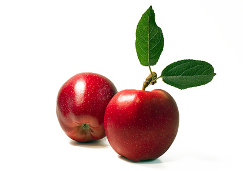

Apples (Malus x domestica)

Mating & Breeding System: The flowers of apple have both male and female reproductive parts, with five stigmas and styles and numerous stamens. In certain cultivars, not all stigmata in an apple flower need to receive pollen in order for all ovules to be fertilized, as pollen grains delivered to one stigma can fertilize ovules associated with a different stigma. Apples are incapable of self-fertilization, even within a cultivar, and require cross-pollination by insects in order to set fruit and produce seeds.
Pollination, Quality & Yield: When full pollination occurs, large, symmetrical, and thus valuable, apples are produced. Malformed and small fruit develop when fertilization is incomplete. Apples often produce more flowers than can develop into fruit and growers generally thin flowers to favour larger fruit development. Pollination of the desired flowers is still required, and insects must carry the pollen from a pollenizer
to those blossoms. Early fertilization is desirable to allow the most time for development of mature fruit. Some cultivars may show ovule degeneration before fertilization, which results in fruit with few seeds that are ultimately shed.
Pollination Recommendations: Apples are self-incompatible, and trees cannot be fertilized by their own pollen or by the pollen of a tree of the same cultivar. It is necessary to plant pollenizers of a different cultivar in the orchard such that no tree is more than 20 meters from a pollenizer tree. The ideal pollenizer will have similar flowers and rewards as the main cultivar, so that pollinators do not display a preference for one over the other. Some Malus species such as crabapple have been bred to produce huge numbers of flowers and their resulting fruit are unlikely to be confused with the apple crop. In some modern orchards, a branch of the pollenizer is grafted onto the production trees, but pollenizer branches must be plentiful enough and flower sufficiently to adequately service the production trees. The effectiveness of cultivars as pollenizers varies, so when planning an orchard, growers should confirm that their choice of pollenizer is suitable for cross-pollination with the production cultivar.
Apples are traditionally pollinated by honey bees. The recommendation is 2-5 colonies per hectare, depending on orchard age and tree size (modern orchards with trellised dwarf trees require the high end of the range or more).
Orienting hive or domicile openings to the south facilitates warming in the morning and encourages bee activity. Honey bees will not forage below 15°C or in excessive wind or dampness, so pollination may suffer if there is inclement spring weather during early flowering. Cold temperatures can also hamper fertilization in the flower itself, leading to problems with fruit set and seed production. More colonies and/or the use of appropriate pollen dispensers can help. (See “Pollen Supplementation”) Bumble bees and blue orchard bees have been shown to successfully pollinate apples during inclement weather. Wild pollinators are also valuable, particularly in small orchards adjacent to areas such as forests and wetlands that provide nesting habitat. (See “Wild Pollinators”)
Managing competing blooms is an important concern when managing pollination. If encouraging wild pollinators, or establishing an alternative pollinator such as the blue orchard bee, is of interest to the orchardist, alternate forage is required for these bees to complete their life cycle (see Examples of Alternative Pollinator Forage and “Habitat and Food”). One option for orchardists is to plant forage between tree rows which will flower after the crop bloom period.
At the same time, weeds or alternative forage should not be allowed to compete with crop blooms (especially if the crop is less attractive to foraging insects than the weeds). Growers should mow (not apply herbicide) competing blooms during fruit bloom only. However, growers should also be aware that alternative forage may attract bees to orchards off-bloom. This can result in bee kills for neighbouring beekeepers if the grower uses insecticides.
References
Benedek, P. & Nyeki, J. 1996. Fruit set of selected self-sterile and self-fertile fruit cultivars as affected by the duration of insect pollination. Acta Horticulturae 423:57-63.
Bosch, J., Kemp, W.P., & Trostle, G.E. 2006. Bee population returns and cherry yields in an orchard pollinated with Osmia lignaria (Hymenoptera: Megachilidae). Journal of Economic Entomology 99:408-413.
Boyle, R.M.D. & Philogene, B.J.R. 1983. The native pollinators of an apple orchard – variations and significance. Journal of Horticultural Science 58:355-363.
Delaplane, K.S. & Mayer, D.F. 2000. Crop Pollination by Bees. CABI Publishing, New York.
Free, J.B. 1993. Insect Pollination of Crops, 2nd edition. Academic Press.
Kevan, P.G. 1988. Pollination, crops and bees. OMAFRA publication 72.
Kron, P., Husband, B.C., Kevan, P.G., & Belaoussoff, S. 2001. Factors affecting pollen dispersal in high-density apple orchards. HortScience 36:1039-1046.
Mayer, D.F., Johansen, C.A., & Burgett, M. 1986. Bee pollination of tree fruits. Pacific Northwest Cooperative Extension Publication #PNW 0282.
Mayer, D.F., Johansen, C.A., & Lunden, J.D. 1989a. Honey bee foraging behaviour on ornamental crabapple pollenizers and commerical apple cultivars. HortScience 24:510-512.
Scott-Dupree, C.D. & Winston, M.L. 1987. Wild bee pollinator diversity and abundance in orchard and uncultivated habitats in the Okanagan Valley, British Columbia. Canadian Entomologist 119:735-745.
Scott-Dupree, C.D., Winston, M., Hergert, G., Jay, S.C., Nelson, D., Gates, J., Termeer, B., & Otis, G. 1995. A guide to managing bees for crop pollination. Canadian Association of Professional Apiculturists, Aylesford NS.
Sheffield, C.S., Smith, R.F., & Kevan, P.G. 2005. Perfect syncarpy in apple (Malus x domestica ‘Summerland McIntosh’) and its implications for pollination, seed distribution and fruit production (Rosaceae: Maloideae). Annals of Botany 95:583-591
Thomson, J.D. & Goodell, K. 2001. Pollen removal and deposition by honeybee and bumblebee visitors to apple and almond flowers. Journal of Applied Ecology 38:1032-1044.
Townsend, G.F., Riddell, R.T., & Smith, M.V. 1958. The use of pollen inserts for tree fruit pollination. Canadian Journal of Plant Science 38:39-44.
Wilson, K. & Elfving, D.C. 2000. Crabapple pollenizers for apples. OMAFRA FactSheet 00-011